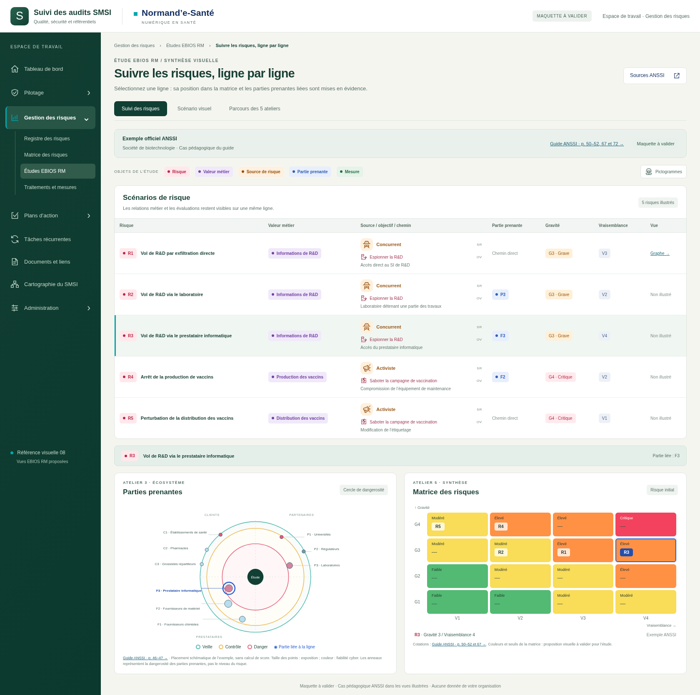
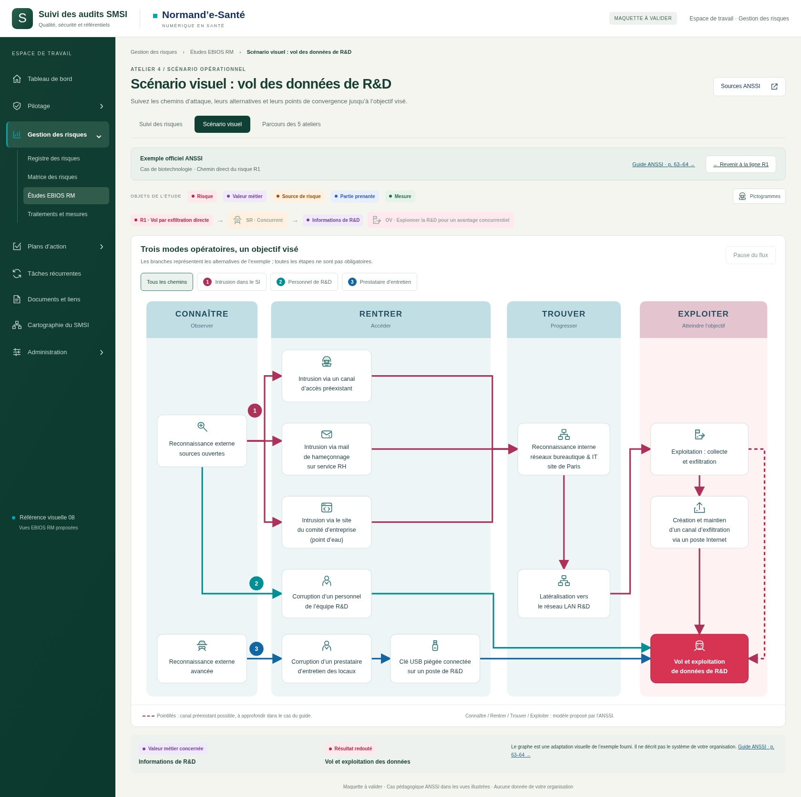
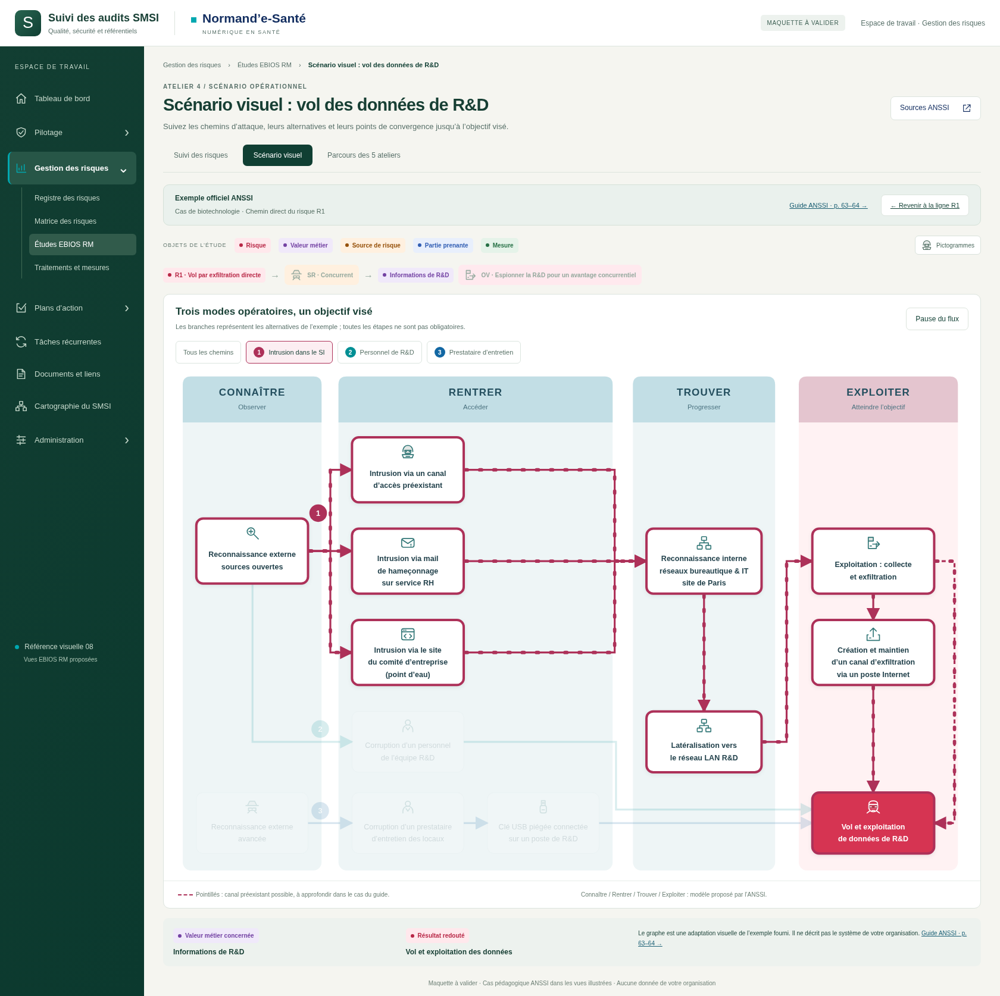
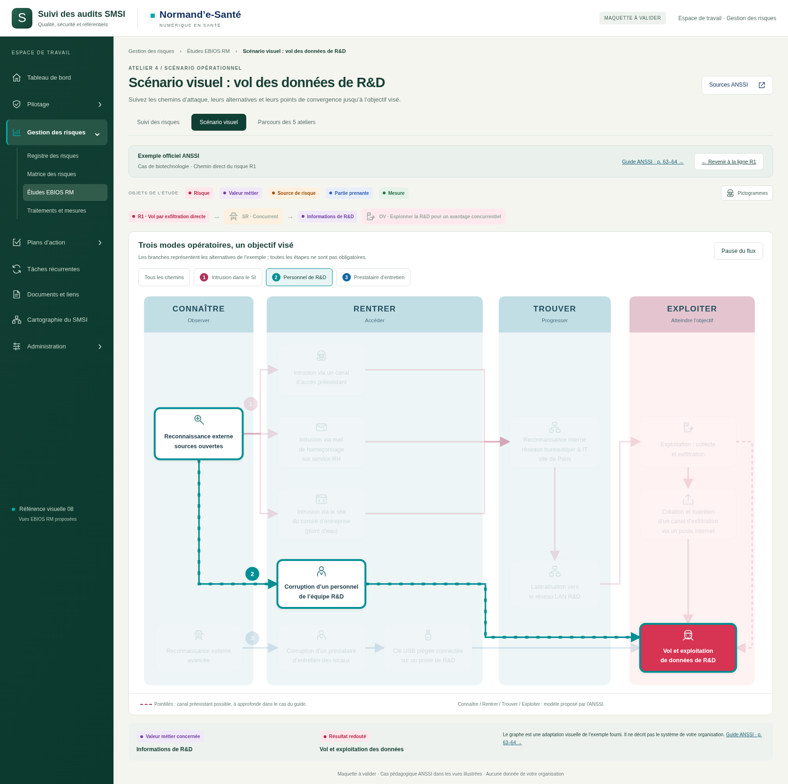
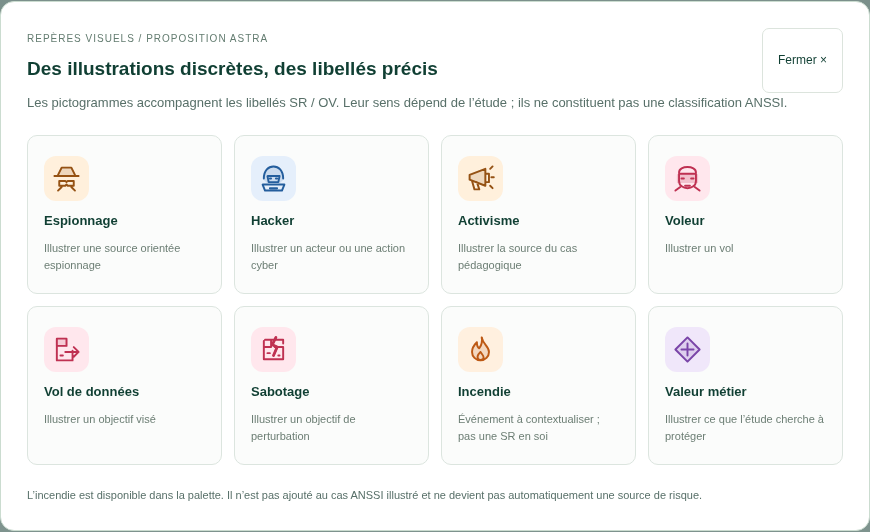

EBIOS RM · Chemins animés
Ouvrir le chemin animé
Suivi des risques · Matrice et cercle

Scénario opérationnel · Trois chemins

Sélection R2 · Laboratoire
Sélection R4 · Production
Chemin 1 · Intrusion et embranchements

Chemin 2 · Personnel R&D

Palette de pictogrammes SR / OV
